Introduction ( rev. July 6, 2007; first posted October 4, 2006 )
| The new boxes will attach to the computer via the USB and have the
same connector as the PICkit2.
They can work with LABview (as is Mike's intention) and they can also work with hyperterminal as they look like a virtual com port and can be assigned any unused comX number via the control panel. The box contains a PIC18F4525 programmable microcontroller (single chip
microcomputer with built in I/O).
Having build this prototype I'd suggest using a bigger box so that the sparkfun board can be mounted on the inside rather than on the outside. I used long wires so that the PIC board could be removed for future modifications. I'd suggest keeping the wires much shorter and using connectors to make the board removable. An alternate suggestion would be to mount the circuit boards on a piece of sintra and use spaces to mount a piece of Plexiglas (or another piece of sintra) above to provide a window in. If the connectors were all mounted at the edges of the bottom sintra board facing outward no holes would have to be drilled/ made which would save a lot of time. In June 2007 a external crystal oscillator was added to the project to eliminate jitter and inconsistencies in the frequency from the internal oscillator PLL combination. |
Info on the sparkfun USB board see notes at
http://www.kwantlen.ca/science/physics/faculty/dpeirce/notes/sparkfun.html
The XP, win98se, MAC and Linux drivers can be found
here
http://www.ftdichip.com/Drivers/VCP.htm
Showing USB connection 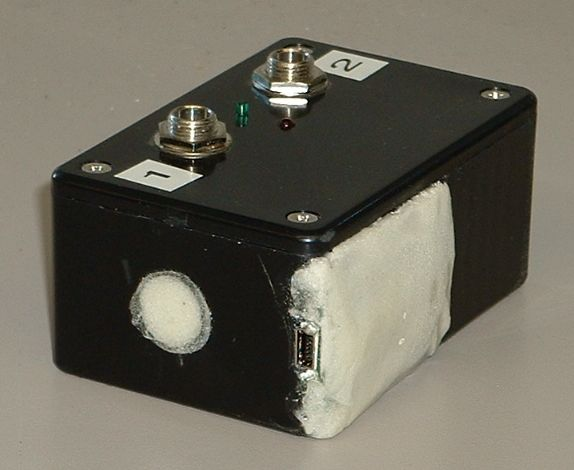
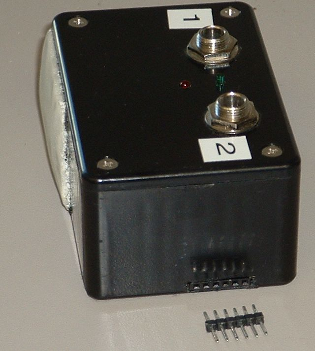
Removable pins can be used to connect to PICkit2 for updating firmware!
| July 6, 2007 |
| At this time we are going with an external crystal oscillator as an
expediency.
Application note http://ww1.microchip.com/downloads/en/AppNotes/00949a.pdf gives more background on getting the crystal HS oscillator functioning. |
| June 27, 2007 |
| The oscillator module is working at 32 MHz.
To get the PIC programmed I had to program it without attaching the
oscillator first.
I used a variation of the flash program to toggle D0 a bunch of times and then sit for a 0.5 second delay (makes triggering the digital scope easy). If we were going to mass produce this it would be more cost effective to go with a crystal but as it is I think the crystal oscilator (in a package) is going to save us a lot of trouble so it is worth the extra cost to us. $2 to $3 each rather than $0.60 each. The circuit is
Used Osc = EC // (external clock). The osc freq can be seen in the lower right as 31.9998 MHz
The OSC/4 frequency is 7.99994 MHz measured
look at the delta time between the cursors the instruction rate is
125.0 ns measured
|
| June 22, 2007 |
| Mike brought a prototype box to Richmond. I fixed a lead that had broken
off the programing connector.
After shorting out the 1K resistor in the oscillation circuit I was able to get it to oscillate but is was at 14 MHz rather than 40MHz and the output seemed small. I rebuilt the circuit twice and did not get it to function. This is simply taking too long so to avoid wasting more time I have decided to go ahead and order 32 MHz crystal oscillators. Mike would like a 32 MHz oscillator because the frequency has been working well for the USART communications (the existing program with the internal oscillator and PLL operates at 32 MHz so no changes to existing code would be required. Epson Toyocom Corporation
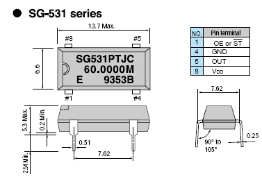 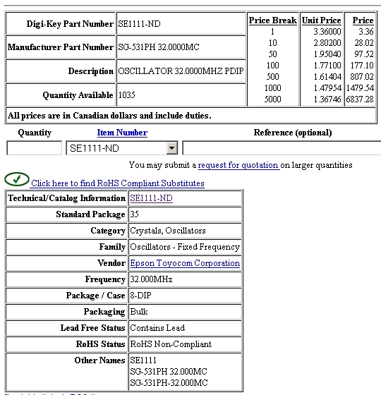
will also look at a 40 MHz oscillator. |
| June 11. 2007 |
| I have put the 10 MHz crystal (see June08) on order but have decided
to also purchase a 40 MHz crystal <Datasheet>
After talking to Mike I will also be getting a 32 MHz crystal (same datasheet). Note this is a 3rd overtone crystal <see
application note>. The following is from the datasheet
The following is from Digikey 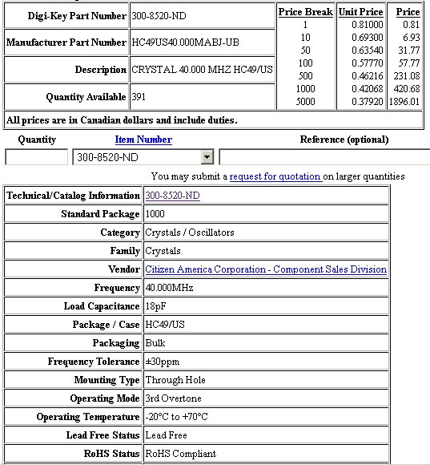 The following is for the 32 MHz crystal (same datasheet as 40 MHz crystal above). 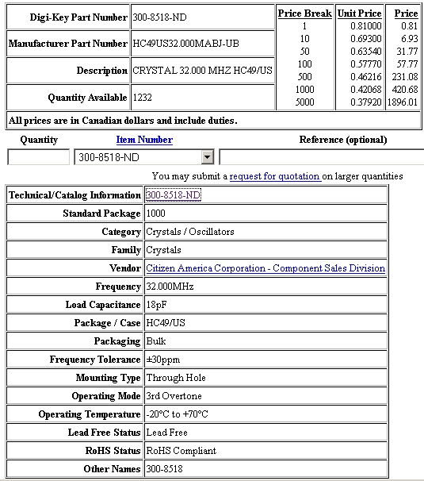 |
June 08, 2007
| Up until now the photogate timer boxes have been using the PIC18F4525
internal oscillator set to 32 MHz. The frequency could be adjusted on the
units and was somewhat stable but only if the timer box was always run
on the same computer since the frequency was voltage dependent. We are
considering adding crystals to the timers to make them more stable. I have
tentatively selected the following crystal
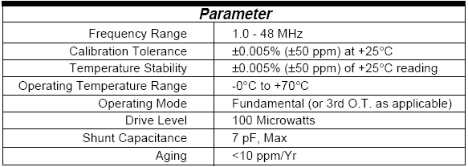 From Digikey web page
|
| Just tested box under XP. It worked the same except there was activity
reported for the photogates if they were not attached. I expect this can
be attributed to noise at the inputs when no signal is attached. It works
as before when both photogate plugs are inserted. As a quick solution for
the prototype I have made two dummies which can be inserted when no photogate
is present. In future units I suggest installing the dummies on the board
as pull-ups.
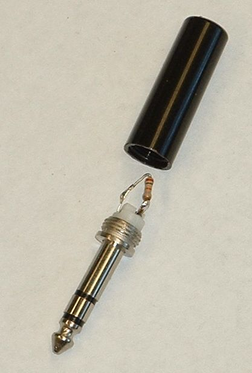 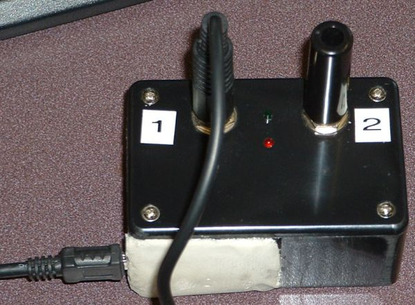 |
Tested photogate box with diagnostic program
source code ||| hex file
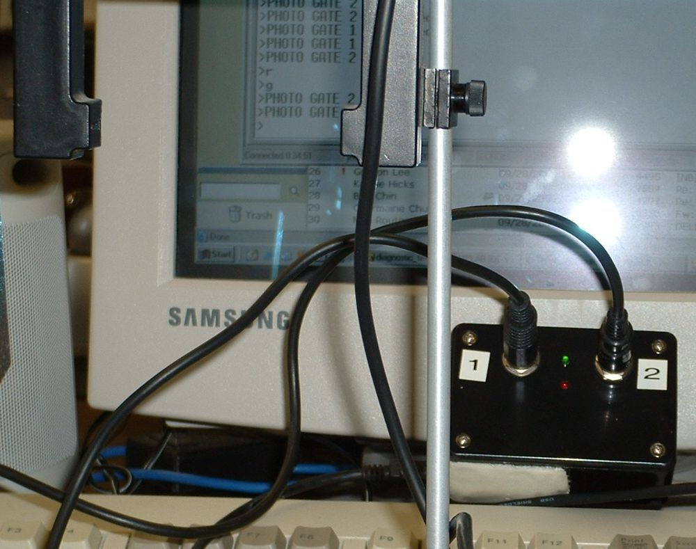
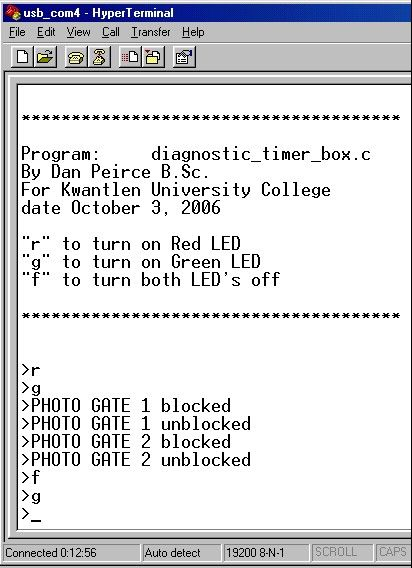
Small LED's have been mounted on cover (one green one red). They are
not on here (just the reflection from the flash).
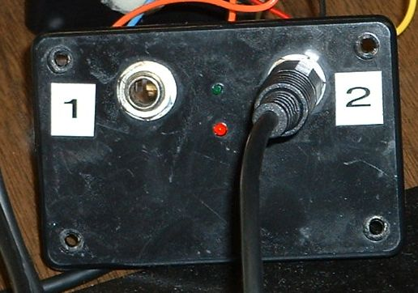
Tested one of the photogate inputs. Photo here shows box open and board pulled out. Used 32bit timer capture program from June. Will write a little diagnostic to test box features including leds and both timer inputs.
I'd use a different box on another one. Here there are long wires so
the board can be removed. It would be better to have connectors and short
wires. Also rather than have the jacks on the lid I'd put them on a front
panel next time.
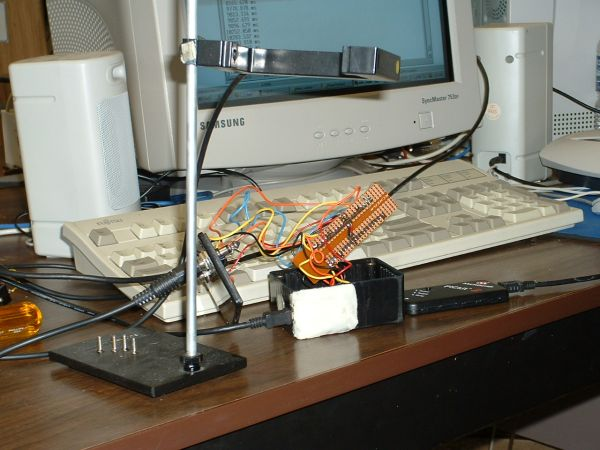
Note:
Today the sparkfun board came up as com5. It was changed back to com4
using the device manager.
PIC board inserts into box -- once wiring complete.
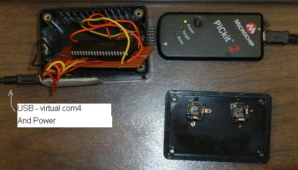
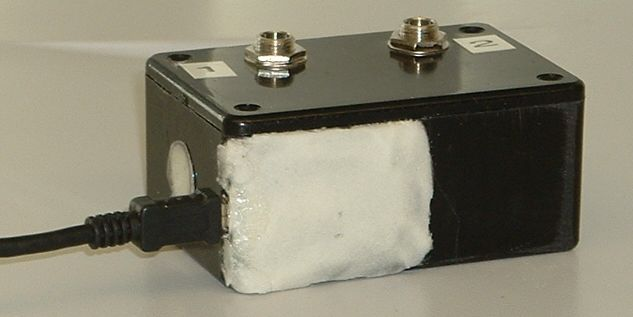
Sept. 19, 2006 Finished mounting of USB board from Sparkfun.
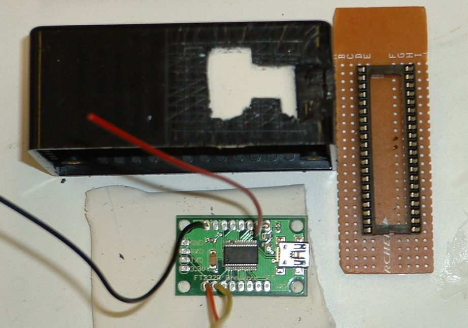 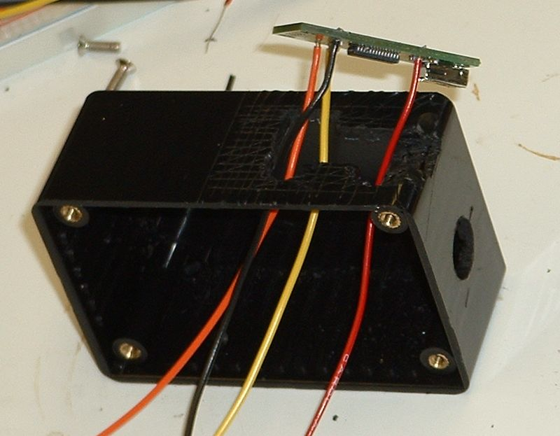
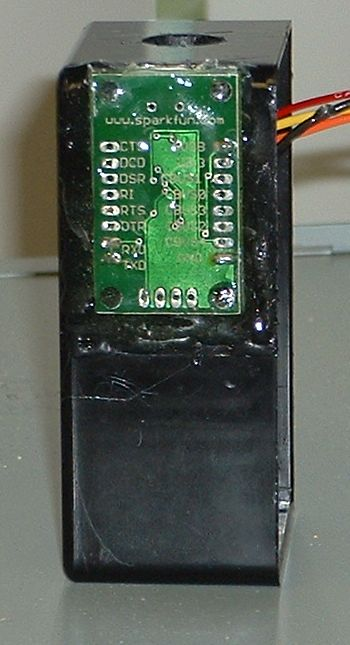